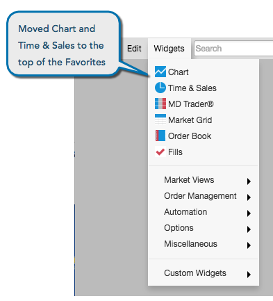

Favorite widgets
The favorites section of the Widget menu serves three purposes:
-
It lets you put widgets you use often to the top of the menu for quick access.
-
It identifies which widget icons appear in the instrument and product search quick launch, as well as the order in which they appear.
-
It specifies the order in which the icons are shown in the search results.
You can add, remove and reorder widgets within your Favorites menu.
For example, if you use the Chart and Time & Sales widgets frequently, but do not often launch the Positions, Fills and Audit Trail widgets, you can move the frequently used widgets to the top of your list and remove the less-frequently used widgets from the list.

With this Widget menu arrangement, notice how the order of the four widgets relevant for instruments matches the order they appear in the menu.